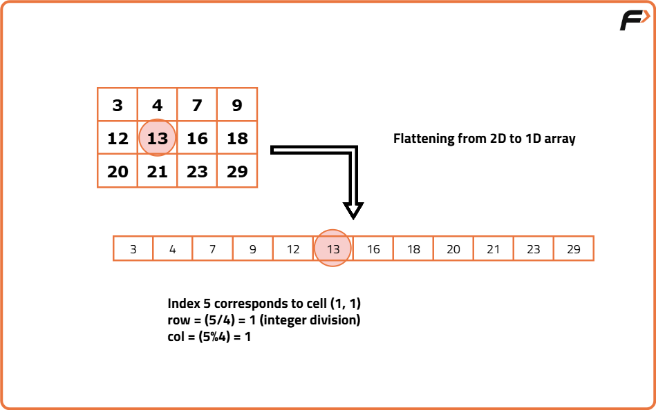

Search in a sorted 2D matrix
Problem Statement: You have been given a 2-D array 'mat' of size 'N x M' where 'N' and 'M' denote the number of rows and columns, respectively. The elements of each row are sorted in non-decreasing order. Moreover, the first element of a row is greater than the last element of the previous row (if it exists). You are given an integer ‘target’, and your task is to find if it exists in the given 'mat' or not.
Examples
Input :mat = [ [1, 2, 3, 4], [5, 6, 7, 8], [9, 10, 11, 12] ], target = 8 Output :True. Explanation :The target = 8 exists in the 'mat' at index (1, 3).
Input :mat = [ [1, 2, 4], [6, 7, 8], [9, 10, 34] ], target = 78 Output :false. Explanation :The target = 78 does not exist in the 'mat'. Therefore in the output, we see 'false'.
Disclaimer: Here is the practice link to help you assess your knowledge better. It's highly recommend trying to solve it before looking at the solution.
Brute force Approach
Algorithm
- We will use a loop(say i) to select a particular row at a time.
- Next, for every row, we will use another loop(say j) to traverse each column.
- Inside the loops, we will check if the element i.e. matrix[i][j] is equal to the ‘target’. If we find any matching element, we will return true.
- Otherwise, after completing the traversal, we will return false.
Code
#include <bits/stdc++.h>
using namespace std;
class Solution {
public:
// Function to search for a target value in the matrix
bool searchMatrix(vector<vector<int>>& matrix, int target) {
// Get number of rows in the matrix
int n = matrix.size();
// Get number of columns in the matrix
int m = matrix[0].size();
// Traverse each row
for (int i = 0; i < n; i++) {
// Traverse each column in the current row
for (int j = 0; j < m; j++) {
// Check if the current element matches the target
if (matrix[i][j] == target)
return true;
}
}
// Return false if the target is not found
return false;
}
};
// Driver code
int main() {
// Define a 2D matrix
vector<vector<int>> matrix = {{1, 2, 3, 4},
{5, 6, 7, 8},
{9, 10, 11, 12}};
// Create an object of the Solution class
Solution obj;
// Call the searchMatrix function and print the result
if (obj.searchMatrix(matrix, 8))
cout << "true\n";
else
cout << "false\n";
return 0;
}
Complexity Analysis
Time Complexity: O(n × m), We are traversing the entire matrix with `n` rows and `m` columns. In the worst case, we may end up visiting every cell once if the target is not present. So, the total number of operations is proportional to the number of elements in the matrix.
Space Complexity: O(1),We are not using any additional space. The algorithm uses a constant amount of extra memory regardless of the size of the matrix just loop variables and the target. Therefore, the space complexity is constant.
Better Approach
Algorithm
The question specifies that each row in the given matrix is sorted. Therefore, to determine if the target is present in a specific row, we don't need to search column by column. Instead, we can efficiently use the binary search algorithm.
To make the time complexity even better, we won't use binary search on every row. We'll focus only on the particular row where the target might be located.
How to check if a specific row is containing the target:
If the target lies between the first and last element of the row, i (i.e. matrix[i][0] <= target && target <= matrix[i][m-1]), we can conclude that the target might be present in that specific row.
Once we locate the potentially relevant row containing the 'target', we need to confirm its presence. To accomplish this, we will utilize the Binary search algorithm, effectively reducing the time complexity.
- We will use a loop(say i) to select a particular row at a time.
- Next, for every row, i, we will check if it contains the target.
- If matrix[i][0] <= target && target <= matrix[i][m-1]: If this condition is met, we can conclude that row i has the possibility of containing the target.
So, we will apply binary search on row i, and check if the ‘target’ is present. If it is present, we will return true from this step. Otherwise, we will return false.
- If matrix[i][0] <= target && target <= matrix[i][m-1]: If this condition is met, we can conclude that row i has the possibility of containing the target.
- Otherwise, after completing the traversal, we will return false.
Code
#include <bits/stdc++.h>
using namespace std;
class Solution {
public:
// Function to perform binary search on a 1D vector
bool binarySearch(vector<int>& nums, int target) {
// Get the size of the array
int n = nums.size();
// Initialize low and high pointers for binary search
int low = 0, high = n - 1;
// Binary search loop
while (low <= high) {
// Calculate the middle index
int mid = (low + high) / 2;
// If the middle element is the target, return true
if (nums[mid] == target)
return true;
// If the target is greater, move to the right half
else if (target > nums[mid])
low = mid + 1;
// Otherwise, move to the left half
else
high = mid - 1;
}
// Return false if target not found
return false;
}
// Function to search for target in the 2D matrix
bool searchMatrix(vector<vector<int>>& matrix, int target) {
// Get the number of rows
int n = matrix.size();
// Get the number of columns
int m = matrix[0].size();
// Traverse each row
for (int i = 0; i < n; i++) {
// Check if target could be within this row
if (matrix[i][0] <= target && target <= matrix[i][m - 1]) {
// Apply binary search on the current row
return binarySearch(matrix[i], target);
}
}
// Return false if target is not found in any row
return false;
}
};
// Driver code
int main() {
// Define a 2D matrix
vector<vector<int>> matrix = {
{1, 2, 3, 4},
{5, 6, 7, 8},
{9, 10, 11, 12}
};
// Create an object of the Solution class
Solution obj;
// Call the searchMatrix function and print the result
if (obj.searchMatrix(matrix, 8))
cout << "true\n";
else
cout << "false\n";
return 0;
}
Complexity Analysis
Time Complexity: O(n × log m), We go through each of the `n` rows once. For any valid row where the target can exist, we apply binary search which takes O(log m). So overall time = O(n × log m).
Space Complexity: O(1), No extra space is used just a few integer variables for looping and binary search. So space complexity is constant.
Optimal Approach
Algorithm
But actually flattening the matrix takes extra time and memory, which makes it inefficient. Instead, we can simulate the flattening without creating a new array. The trick is to directly map a 1D index into the corresponding row and column of the 2D matrix.
To do this mapping, if there are `m` columns in the matrix and the index is `i`, then:
Row = i / m, Column = i % m.
So instead of working on the 2D matrix directly, we pretend it’s a sorted 1D array of length (rows × columns), and apply binary search on this imaginary array.
- Start with two pointers: one at the first index of the imaginary 1D array, and the other at the last index.
- While the first pointer does not cross the last:
- Find the middle index between the two pointers.
- Convert this middle index into a row and column of the original 2D matrix.
- If the element at that position matches the target, return true (element found).
- If the element is smaller than the target, discard the left half and continue searching in the right half.
- If the element is larger than the target, discard the right half and continue searching in the left half.
- If the search ends without finding the element, return false (element not present in the matrix).

Code
#include <bits/stdc++.h>
using namespace std;
class Solution {
public:
// Function to search target in a 2D matrix using binary search over a virtual 1D array
bool searchMatrix(vector<vector<int>>& matrix, int target) {
// Get the number of rows
int n = matrix.size();
// Get the number of columns
int m = matrix[0].size();
// Set initial binary search range over the imaginary 1D array
int low = 0, high = n * m - 1;
// Perform binary search
while (low <= high) {
// Calculate the middle index of the virtual 1D array
int mid = (low + high) / 2;
// Convert mid index to corresponding 2D indices
int row = mid / m;
int col = mid % m;
// Check if the target is found
if (matrix[row][col] == target)
return true;
// If the target is greater, discard the left half
else if (matrix[row][col] < target)
low = mid + 1;
// If the target is smaller, discard the right half
else
high = mid - 1;
}
// If not found, return false
return false;
}
};
// Driver code
int main() {
// Define a 2D matrix
vector<vector<int>> matrix = {
{1, 2, 3, 4},
{5, 6, 7, 8},
{9, 10, 11, 12}
};
// Create an object of the Solution class
Solution obj;
// Call the function and print result
if (obj.searchMatrix(matrix, 8))
cout << "true\n";
else
cout << "false\n";
return 0;
}
Complexity Analysis
Time Complexity: O(log(NxM)), where N = given row number, M = given column number.We are applying binary search on the imaginary 1D array of size NxM.
Space Complexity: O(1) as we are not using any extra space.